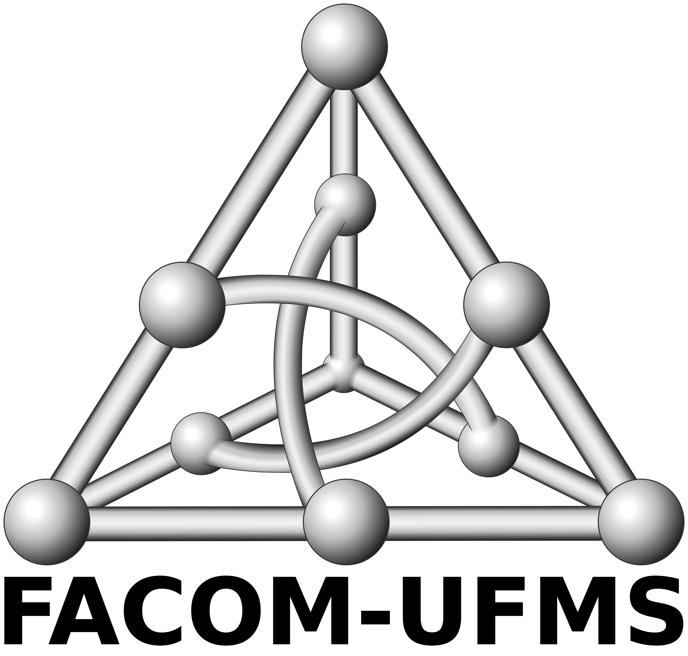

14th Marathon of Parallel Programming


Current Edition
Click here for the current edition of the Marathon of Parallel Programming
Marathon of Parallel Programming 2019
The Marathon of Parallel Programming is an SBAC-PAD/WSCAD track since 2006.
This year, there will be only a competition, using both multicore and many-core infrastructures. We also have two categories: Local and Remote. See the rules page to understand better these categories and choose one to participate.
The main purpose of this contest is to spread knowledge in parallel and distributed programming through a high-level competition. Correct answer and performance gain are the targets. Undergraduate and graduated students of Computer Science, Computer Engineering and related courses are welcome to participate on Marathon.
Each team consists of three (3) students members and a coach. They have about 5 hours to solve up to 9 problems. For Local Contest, the teams can also bring printed hard copy material (e.g. books, manuals, notes, papers).
Judgment is strict. In the beginning of the contest, teams receive problem descriptions and sequential (serial) solutions. Resolution involves not only the correct problem solution but also performance speedup for parallel (or distributed) version, measured according to criteria defined by committee for current contest.
When contest finishes, all teams will have their results available and winners will be officially announced during official SBAC-PAD dinner.
In conjunction with International Symposium on Computer Architecture and High Performance Computing - SBAC-PAD 2019 and Simpósio em Sistemas Computacionais de Alto Desempenho - WSCAD 2019.
| Organized by | |
|  | |